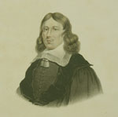
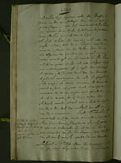
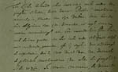
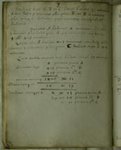
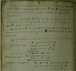
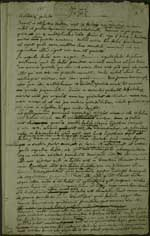
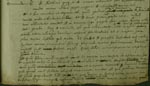

Christiaan Huygens. Facetten van een genie
De manuscripten
8 april 31 mei 2004
Tentoonstelling in de Universiteitsbibliotheek Leiden
2. Huygens en Frans van Schooten (1645-1660)
Ofschoon rechtenstudent als zijn broer Constantijn hield Christiaan zich in de Leidse studietijd – naast tekenen – vooral bezig met wiskunde. Daartoe kwam hij onder de hoede van Frans van Schooten Jr, die in Leiden Nederduytsche Mathematique onderwees. Van Schooten maakte de jonge Huygens (en andere leerlingen als Johan de Witt) via privaatcolleges vertrouwd met de wiskundige denkbeelden en werken van Descartes. Christiaan bleef na zijn vertrek uit Leiden intensief contact houden met Van Schooten tot diens dood in 1660. Hiervan getuigt de omvangrijke correspondentie bewaard in de Leidse Huygenscollectie (en uitgegeven in de eerste delen van de Oeuvres complètes, zie vitrine 9)
|  | 2.1. Frans van Schooten Jr (1615-1660), Leids hoogleraar Nederduytsche Mathematique en wiskunde 1646-1660. Litho in kleur. [Academisch Historisch Museum, inv. 3542] |
|  | 2.2. Constantijn Huygens, ‘Vervolgh
van ’tLeven mijner sonen, voor desen, in een ander Boeck, elck
in ’tbysonder beschreven’. Manuscript, 2e helft 17e eeuw. [HUG
30 II] –– Aantekeningen van vader Huygens over de vorderingen van Constantijn en Christiaan in hun eerste studiejaar te Leiden: “Tot Leiden besteedde ickse met eenen oock onder den jonghen Schooten, korts daernae Professor Matheseos vernaculae in plaetse van syn Vader. dese leerde haer Algebram van M. Descartes, ende sagh met extreme verwonderingh aen hoe insonderheit Christiaen sich daervan quete; soo dat inde oude schrijvers selfs niet en wierde gevonden, oft hij sagh’er door ende kreegh de reputatie, die hij wel waerd was, van doemaels de geleerdste mathematicus van alle de jeughd te Leiden te zijn [...]”. |
|  | |
|  | 2.3. Wiskundige vraagstukken en
aantekeningen, genoteerd door Frans van Schooten (1645) en
Christiaan Huygens (1650-1657). Manuscript, 1645-1657. [HUG 12] –– In het begindeel noteerde Van Schooten voor Christiaan een soort doorlopende cursus algebra, geheel ingericht in de geest van Descartes. Ook een hoogvlieger als Huygens begint in deze cursus bij de bodem, zoals vraagstuk 7 duidelijk maakt (links): Drie personen A, B en C hebben samen 31 geldstukken. A heeft er 3 meer dan B; B heeft er 2 meer dan C. Hoeveel munten heeft ieder? |
|  | |
|  | 2.4. Brief van Christiaan Huygens
aan Frans van Schooten, gedateerd 7 november 1652. Minuut (= OC
135b). [HUG 45] –– Hoe snel Huygens’ ster in zeven jaar tijd gerezen was, blijkt uit deze kladversie van een brief uit 1652 waarin Christiaan zijn vroegere leermeester Van Schooten diens bijna kritiekloze verering van Descartes voorhoudt (rechtsonder): Quod fidem mihi negasti cum de invento meo nupero te certiorem feci ... – “Dat u geen geloof hecht aan mijn nieuwe vondst waarover ik u onlangs berichtte, verheugt mij zeer omdat die vondst mij van te meer gewicht schijnt, nu ze mij de gelegenheid biedt naar mijn beste vermogen dat betreurenswaardige vooroordeel bij u te bestrijden, dat u ertoe brengt bij de woorden van Descartes te zweren. Ofschoon ik steeds zijn bewonderenswaardig vernuft erkend heb, stel ik hem toch niet zó hoog [dat ik het niet wenselijk zou vinden, de dingen die hij vaak zonder bewijs pleegde te beweeren aan de waarheid te toetsen].” |
|  |
| vorige pagina | volgende pagina |